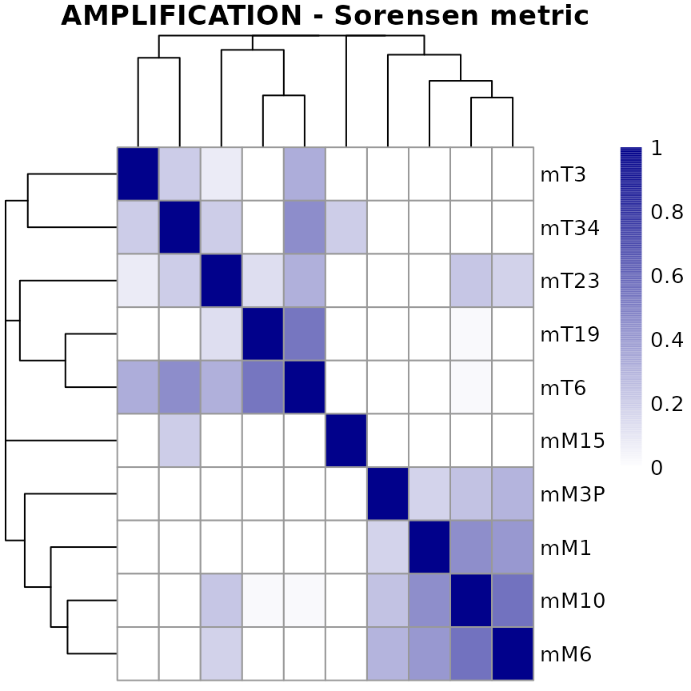
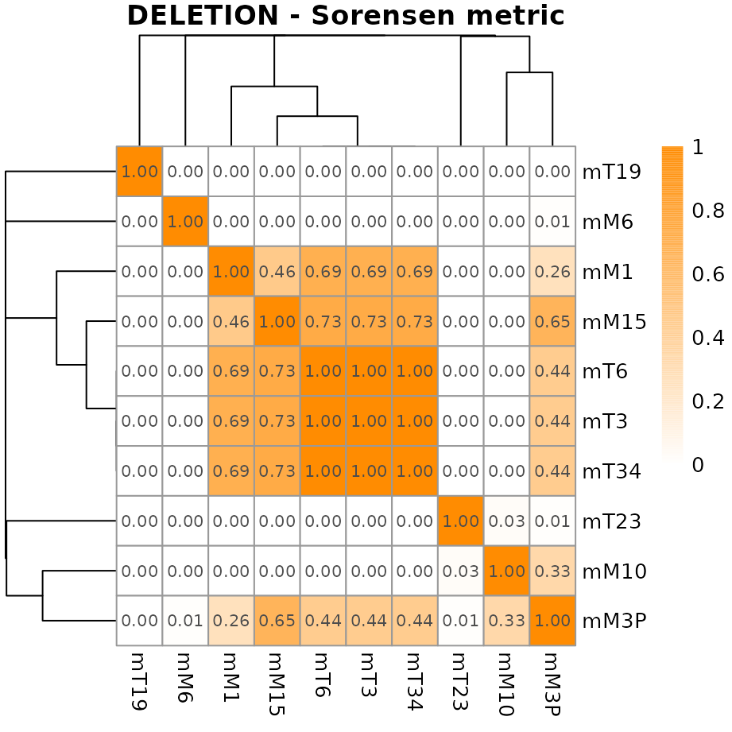

Quantifying similarity between copy number profiles
Astrid Deschênes, Pascal Belleau and Alexander Krasnitz
Source:vignettes/CNVMetrics.Rmd
CNVMetrics.Rmd
Package: CNVMetrics
Authors: Astrid Deschênes [aut, cre] (ORCID: https://orcid.org/0000-0001-7846-6749), Pascal Belleau
[aut] (ORCID: https://orcid.org/0000-0002-0802-1071), David A. Tuveson
[aut] (ORCID: https://orcid.org/0000-0002-8017-2712), Alexander
Krasnitz [aut]
Version: 1.15.1
Compiled date: 2026-01-01
License: Artistic-2.0
Licensing
The CNVMetrics package and the underlying CNVMetrics code are distributed under the Artistic license 2.0. You are free to use and redistribute this software.
Citing
If you use this package for a publication, we would ask you to cite one of the following.
When using the copy number profile simulating method:
Deschênes A, Belleau P, Tuveson DA and Krasnitz A. Quantifying similarity between copy number profiles with CNVMetrics package [version 1; not peer reviewed]. F1000Research 2022, 11:816 (poster) (doi: 10.7490/f1000research.1119043.1)
When using the metrics:
Belleau P, Deschênes A, Beyaz S et al. CNVMetrics package: Quantifying similarity between copy number profiles [version 1; not peer reviewed]. F1000Research 2021, 10:737 (slides) (doi: 10.7490/f1000research.1118704.1)
Introduction
Copy number variation (CNV) includes multiplication and deletion of DNA segment. Copy number variations have been shown to be associated with a wide spectrum of pathological conditions and complex traits, such as developmental neuropsychiatric disorders (Hiroi et al. 2013) and especially cancer (Stratton et al. 2009).
CNVs are usually reported, for each sample, as genomic regions that are duplicated or deleted with respect to a reference. Those regions are denoted as CNV status calls. The level of amplification or deletion can also be reported, usually in log2 ratio values or normalized read depth (Zhao et al. 2013). As an example, the Figure 1 shows the copy number profiles from sequencing data of two mouse pancreatic organoids (Oni et al. 2020), calculated with CNprep (Belleau et al. 2020) and plot with gtrellis (Gu et al. 2016).
Copy number profiles of two mouse metastatic pancreatic organoids (M10 and M30).
While visual representation is a practical way to qualitatively compare copy number profiles, metrics are useful statistical tools for quantitatively measuring similarity and dissimilarity between profiles. Similarity metrics can be employed to compare CNV profiles of genetically unrelated samples. Moreover, those metrics can as well be put to use on samples with common genetic background. As an example, a comparison between primary and metastatic tumor CNV profiles may reveal genomic determinants of metastasis. Similarly, patient-derived xenograft or organoid models of cancer are expected to recapitulate CNV patterns of the tumor tissue of origin (Gendoo et al. 2019).
The CNVMetrics package calculates metrics to estimate the level of similarity between copy number profiles. Some metrics are calculated using the CNV status calls (amplification/deletion/LOH status or any user specific status) while others are based on the level of amplification/deletion in log2 ratio.
Significance of the observed metrics is assessed in comparison to the null distribution, using simulated profiles. Functions implementing the simulation methods are included in the package.
Finally, a visualization tool is provided to explore resulting metrics in the form of sample-to-sample heatmaps.
General CNVMetrics workflow.
Installation
To install this package from Bioconductor, start R (version “4.2” or higher) and enter:
if (!requireNamespace("BiocManager", quietly = TRUE))
install.packages("BiocManager")
# The following initializes usage of Bioc devel
BiocManager::install(version='devel')
BiocManager::install("CNVMetrics")Workflow for metrics calculated using CNV status calls
The following workflow gives an overview of the capabilities of CNVMetrics to calculate metrics using the CNV status calls (amplification/deletion status or any user specific status).
The key functions for each step of the workflow are:
| Step | Function |
|---|---|
| Data Importation | GenomicRanges::makeGRangesListFromDataFrame() |
| Metric Calculation | calculateOverlapMetric() |
| Metric Visualization | plotMetric() |
The package::function() notation is used for functions
from other packages.
Data Input - Copy number file containing the CNV status calls
CNV status calls are represented as segments with a copy number state. The state be general, such as “amplification”, “deletion” or “neutral”, or more specific such as of loss of heterozygosity (LOH), 1-copy gain, 2-copy gain, 1-copy loss and so on.
A basic five-column input file containing genomic position (chromosome, start, end), sample identification and CNV status calls is required. All samples that need to be analyzed together have to be combined into one file.
A column named state is required. In this column, The CNV status call of each segment must be specified using a string. By default, the states that are analyzed by this package are the amplification/deletion states with this specific notation:
- AMPLIFICATION
- DELETION
Segments with other state values can be present in the file. However, those segments won’t be retain for the calculation of the metrics.
However, the user can define is how notation and decided which state will be used to calculate the similarity metrics. The user defined states can be in upper or lower cases. Examples of possible states:
- LOH
- loh
- 1-copy gain
- GAIN
- loss
- and so on…
Beware that states with different spelling or upper/lower case nomenclature are considered as distinct states and are analyzed separately.
Example of a copy number file containing CNV calls.
Data Importation - GRangesList
The input format for the copy number information, as needed by the
calculateOverlapMetric() function, is a
GRangesList object.
The easiest way to generate a GRangesList object is to
first load the copy number information into an R data.frame
and then, use the
GenomicRanges::makeGRangesListFromDataFrame() function to
convert them to a GRangesList.
For this demonstration, we consider CNV status calls as obtained with CNprep (Belleau et al. 2020), from ten mouse pancreatic organoids (Oni et al. 2020).
## Load required libraries
library(GenomicRanges)
library(CNVMetrics)
## Load file containing CNV calls for 10 mouse organoids
data.dir <- system.file("extdata", package="CNVMetrics")
cnv.file <- file.path(data.dir, "mousePairedOrganoids.txt")
calls <- read.table(cnv.file, header=TRUE, sep="\t")
## The CNV status calls for all samples are present in one file
## The 'state' column is required
## The chromosome Y has been removed
head(calls)## ID chr start end log2ratio state
## 1 mT3 chr1 3527630 195471971 0.143253158 NEUTRAL
## 2 mT3 chr2 3549740 182113224 0.008638116 NEUTRAL
## 3 mT3 chr3 3536051 160039680 0.032630258 NEUTRAL
## 4 mT3 chr4 3734693 156508116 -0.026741963 NEUTRAL
## 5 mT3 chr5 3575586 111373751 -0.018519856 NEUTRAL
## 6 mT3 chr5 111373751 114262563 0.226961493 AMPLIFICATION
## The ID column identifies the 10 samples
unique(calls[,"ID"])## [1] "mT3" "mM6" "mM10" "mM15" "mT6" "mT19" "mT23" "mT34" "mM1" "mM3P"
## The ID column is used to split the samples into different GRanges
## inside a GRangesList
## The 'keep.extra.column=TRUE' parameter is needed to retained the extra
## column 'state' that is needed for the calculation of the metrics
grl <- GenomicRanges::makeGRangesListFromDataFrame(calls,
split.field="ID", keep.extra.columns=TRUE)
grl## GRangesList object of length 10:
## $mM1
## GRanges object with 33 ranges and 2 metadata columns:
## seqnames ranges strand | log2ratio state
## <Rle> <IRanges> <Rle> | <numeric> <character>
## [1] chr1 3527630-62533399 * | 0.0351701 NEUTRAL
## [2] chr1 62533399-82082589 * | -0.1066207 NEUTRAL
## [3] chr1 82082589-195471971 * | 0.0807449 NEUTRAL
## [4] chr2 3549740-182113224 * | 0.0527007 NEUTRAL
## [5] chr3 3536051-136509203 * | 0.3431661 AMPLIFICATION
## ... ... ... ... . ... ...
## [29] chr18 3558909-90702639 * | 0.0736673 NEUTRAL
## [30] chr19 3614043-61431566 * | 0.0902238 NEUTRAL
## [31] chrX 5577384-62973719 * | -0.2259987 NEUTRAL
## [32] chrX 62973719-84082850 * | -0.0641819 NEUTRAL
## [33] chrX 84082850-169538352 * | -0.3902963 DELETION
## -------
## seqinfo: 20 sequences from an unspecified genome; no seqlengths
##
## ...
## <9 more elements>Metric Calculation
The calculation of the similarity metrics is done with the
calculateOverlapMetric() function.
## In this case, the default states (AMPLIFICATION, DELETION) are used.
## So, the 'states' parameter doesn't have to be specified
## The 'states' parameter needs to be adjusted for user-specific states
## Ex: states=c("LOH", "gain")
metric <- calculateOverlapMetric(segmentData=grl, method="sorensen", nJobs=1)
metric## CNV Metrics
## Metric:
## sorensen
##
## AMPLIFICATION:
## mM1 mM10 mM15 mM3P mM6
## mM1 NA NA NA NA NA
## mM10 0.4437132 NA NA NA NA
## mM15 0.0000000 0.0000000 NA NA NA
## mM3P 0.1713638 0.2380730 0 NA NA
## mM6 0.4048136 0.5545147 0 0.2952499 NA
## [ -- omitted 5 rows/columns ]
##
## DELETION:
## mM1 mM10 mM15 mM3P mM6
## mM1 NA NA NA NA NA
## mM10 0.0000000 NA NA NA NA
## mM15 0.4595765 0.0000000 NA NA NA
## mM3P 0.2568018 0.3336979 0.6481145 NA NA
## mM6 0.0000000 0.0000000 0.0000000 0.00918594 NA
## [ -- omitted 5 rows/columns ]Metric Visualization
A heatmap of this similarity metrics can be a useful tool to get an overview over similarities and dissimilarities between samples.
The plotMetric() function generates a graphical
representation of the similarity metrics in the form of a
sample-to-sample heatmap. By default, an hierarchical clustering based
on the sample distances (1-metric) is used. When NA values are present
in the metric matrix, those are replaced by zero.
## Create graph for the metrics related to amplified regions
plotMetric(metric, type="AMPLIFICATION")
The plotMetric() function uses the pheatmap
package to generate the graph. All arguments accepted by
pheatmap::pheatmap() function are valid arguments.
## Create graph for the metrics related to deleted regions
## Metric values are printed as 'display_numbers' and 'number_format' are
## arguments recognized by pheatmap() function
plotMetric(metric, type="DELETION",
colorRange=c("white", "darkorange"),
show_colnames=TRUE,
display_numbers=TRUE,
number_format="%.2f")
Row and/or column annotation is often useful and can easily be done
by using the annotation_row or annotation_col
arguments, as described in the pheatmap::pheatmap
method.
## Load file containing annotations for the mouse organoids
## The mouse ID identifying the source of the sample
## The stage identifying the state (tumor vs metastasis) of the sample
data.dir <- system.file("extdata", package="CNVMetrics")
annotation.file <- file.path(data.dir, "mousePairedOrganoidsInfo.txt")
annotOrg <- read.table(annotation.file, header=TRUE, sep="\t")
## The row names must correspond to the names assigned to the rows/columns
## in the CNVMetric object
rownames(annotOrg) <- annotOrg$ID
annotOrg$ID <- NULL
all(rownames(annotOrg) == rownames(metric$AMPLIFICATION))## [1] TRUE
## Create graph for the metrics related to amplified regions
## Rows are annotated with the stage and mouse information
plotMetric(metric, type="AMPLIFICATION",
colorRange=c("white", "steelblue"),
annotation_row=annotOrg)
Metrics using the CNV status calls
This survey represents the overlap metrics that are implemented in CNVMetrics package. Those metrics are calculated using the CNV status calls. The size of the amplified/deleted regions as well as the size of the overlapping of regions are always in base paired.
Sørensen
The Sørensen coefficient (Sørensen 1948) is calculated by dividing twice the size of the intersection by the sum of the size of the two sets:
where and represent the regions of each sample in base paired.
Szymkiewicz–Simpson
The Szymkiewicz–Simpson coefficient (Vijaymeena and K. 2016), also known as the overlap coefficient, is calculated by dividing the size of the intersection by the smaller of the size of the two sets:
where and represent the regions of each sample in base paired. If set is a subset of or vice versa, the overlap coefficient value is 1.
Workflow for metrics calculated using the level of amplification/deletion
The following section gives an overview of the capabilities of CNVMetrics to calculate metrics using the the level of amplification/deletion (log2 ratio values). The key functions for each step of the workflow are:
| Step | Function |
|---|---|
| Data Importation | GenomicRanges::makeGRangesListFromDataFrame() |
| Metric Calculation | calculateLog2ratioMetric() |
| Metric Visualization | plotMetric() |
The package::function() notation is used for functions
from other packages.
Data Input - Copy number file containing the level of amplification/deletion
Copy number are often represented as segments with a copy number state and/or the level of amplification/deletion. One usual unit to quantify the level of amplification or deletion is in log2 ratio.
A basic five-column input file containing genomic position (chromosome, start, end), sample identification and the level of amplification/deletion is required. All samples that need to be analyzed together have to be combined into one file.
A column named log2ratio is required. In this column, the amplified and deleted segments must be assigned a numerical value representing the log2ratio or NA.

Example of a copy number file containing log2ratio values.
Data Importation - GRangesList
The input format for the copy number information, as needed by the
calculateLog2ratioMetric() function, is a
GRangesList object.
The easiest way to generate a GRangesList object is to
first load the copy number information into an R data.frame
and then, use the
GenomicRanges::makeGRangesListFromDataFrame() function to
convert them to a GRangesList.
For this demonstration, we consider the level of amplification/deletion as obtained with CNprep (Belleau et al. 2020), from ten mouse pancreatic organoids (Oni et al. 2020).
## Load required libraries
library(GenomicRanges)
library(CNVMetrics)
## Load file containing CNV calls for 10 mouse organoids
data.dir <- system.file("extdata", package="CNVMetrics")
cnv.file <- file.path(data.dir, "mousePairedOrganoids.txt")
calls <- read.table(cnv.file, header=TRUE, sep="\t")
## The CNV status calls for all samples are present in one file
## The 'log2ratio' column is required
## The chromosome Y has been removed
head(calls)## ID chr start end log2ratio state
## 1 mT3 chr1 3527630 195471971 0.143253158 NEUTRAL
## 2 mT3 chr2 3549740 182113224 0.008638116 NEUTRAL
## 3 mT3 chr3 3536051 160039680 0.032630258 NEUTRAL
## 4 mT3 chr4 3734693 156508116 -0.026741963 NEUTRAL
## 5 mT3 chr5 3575586 111373751 -0.018519856 NEUTRAL
## 6 mT3 chr5 111373751 114262563 0.226961493 AMPLIFICATION
## The ID column identifies the 10 samples
unique(calls[,"ID"])## [1] "mT3" "mM6" "mM10" "mM15" "mT6" "mT19" "mT23" "mT34" "mM1" "mM3P"
## The ID column is used to split the samples into different GRanges
## inside a GRangesList
## The 'keep.extra.column=TRUE' parameter is needed to retained the extra
## column 'state' that is needed for the calculation of the metrics
grlog <- GenomicRanges::makeGRangesListFromDataFrame(df=calls,
split.field="ID", keep.extra.columns=TRUE)
grlog## GRangesList object of length 10:
## $mM1
## GRanges object with 33 ranges and 2 metadata columns:
## seqnames ranges strand | log2ratio state
## <Rle> <IRanges> <Rle> | <numeric> <character>
## [1] chr1 3527630-62533399 * | 0.0351701 NEUTRAL
## [2] chr1 62533399-82082589 * | -0.1066207 NEUTRAL
## [3] chr1 82082589-195471971 * | 0.0807449 NEUTRAL
## [4] chr2 3549740-182113224 * | 0.0527007 NEUTRAL
## [5] chr3 3536051-136509203 * | 0.3431661 AMPLIFICATION
## ... ... ... ... . ... ...
## [29] chr18 3558909-90702639 * | 0.0736673 NEUTRAL
## [30] chr19 3614043-61431566 * | 0.0902238 NEUTRAL
## [31] chrX 5577384-62973719 * | -0.2259987 NEUTRAL
## [32] chrX 62973719-84082850 * | -0.0641819 NEUTRAL
## [33] chrX 84082850-169538352 * | -0.3902963 DELETION
## -------
## seqinfo: 20 sequences from an unspecified genome; no seqlengths
##
## ...
## <9 more elements>Metric Calculation
The calculation of the similarity metrics is done with the
calculateOverlapMetric() function.
metricLog <- calculateLog2ratioMetric(segmentData=grlog,
method="weightedEuclideanDistance", nJobs=1)
metricLog## CNV Metrics
## Metric:
## weightedEuclideanDistance
##
## LOG2RATIO:
## mM1 mM10 mM15 mM3P mM6
## mM1 NA NA NA NA NA
## mM10 0.12503352 NA NA NA NA
## mM15 0.12100344 0.08125775 NA NA NA
## mM3P 0.09499932 0.06838924 0.09040692 NA NA
## mM6 0.10819206 0.08071789 0.07608047 0.07192307 NA
## [ -- omitted 5 rows/columns ]Metric Visualization
A heatmap of this similarity metrics can be a useful tool to get an overview over similarities and dissimilarities between samples.
The plotMetric() function generates a graphical
representation of the similarity metrics in the form of a
sample-to-sample heatmap. By default, an hierarchical clustering based
on the sample distances (1-metric) is used. When NA values are present
in the metric matrix, those are replaced by zero.
## Create graph for the metrics related to weighted Euclidean distance-based
plotMetric(metricLog)The plotMetric() function uses the pheatmap
package to generate the graph. All arguments accepted by
pheatmap::pheatmap function are valid arguments.
## Create graph for the weighted Euclidean distance-based metrics
## Remove title (argument main="")
## Metric values are printed as 'display_numbers' and 'number_format' are
## arguments recognized by pheatmap() function
plotMetric(metricLog, colorRange=c("white", "darkorange"),
show_colnames=TRUE,
display_numbers=TRUE,
number_format="%.2f",
main="")Metrics using the level of amplification/deletion
This section presents the similarity measure that is implemented in CNVMetrics package. This metric are calculated using the level of amplification/deletion. The level of amplification/deletion is in log2 ratio while the size of the regions is in base paired.
Weighted Euclidean Distance-Based
The Weighted Euclidean Distance corresponds to the euclidean distance between the log2 values of the two samples multiplied by the natural logarithm of the number of bases of the analyzed segments. The final metric is 1 over 1 added to the squared sum of the values obtained for all segments included in the calculation.
The Weighted Euclidean Distance corresponds to the euclidean distance between the log2 values of the two samples multiplied by the natural logarithm of the number of bases of the analyzed segments. The final metric is 1 over 1 added to the squared sum of the values obtained for all segments included in the calculation.
where and represent the log2 ratio values of samples and for the region while is the length of region in base paired.
Copy number profile simulating method
Significance of the observed metrics can be assessed, in comparison to the null distribution, using simulated profiles. A function implementing a simulation method are included in the CNVMetrics package.
First, the method uses the Copy number profile of a reference sample to generate chromosome templates as describe here:
Workflow showing the creation of a chromosome template from one reference sample.
This process is done for each chromosome of the reference sample.
Then, the chromosome templates and the reference sample are used to generate simulated copy number profiles. For each chromosome from the reference sample, a chromosome template is randomly selected, without replacement. This way, the template is not necessarily coming from the same chromosome that the one from the reference. The workflow to simulate one chromosome is shown here:
Workflow showing the creation of a simulated chromosome through the use of a template.
The processSim() function generates as many simulated
copy profiles as requested by user (nbSim parameter) from
one reference copy number profile in the form of a GRanges
object (curSample parameter).
## Load required package to generate the sample
require(GenomicRanges)
## Create one 'demo' genome with 3 chromosomes and few segments
## The stand of the regions doesn't affect the calculation of the metric
sampleRef <- GRanges(seqnames=c(rep("chr1", 4), rep("chr2", 3), rep("chr3", 6)),
ranges=IRanges(start=c(1905048, 4554832, 31686841, 32686222,
1, 120331, 725531, 12, 10331, 75531, 120001, 188331, 225531),
end=c(2004603, 4577608, 31695808, 32689222, 117121,
325555, 1225582, 9131, 55531, 100103, 158535, 211436, 275331)),
strand="*",
state=c("AMPLIFICATION", "NEUTRAL", "DELETION", "LOH",
"DELETION", "NEUTRAL", "NEUTRAL", "NEUTRAL", "DELETION", "DELETION",
"NEUTRAL", "AMPLIFICATION", "NEUTRAL"),
log2ratio=c(0.5849625, 0, -1, -1, -0.87777, 0, 0, 0.1, -0.9211, -0.9822,
0.01, 0.9777, 0))
head(sampleRef)## GRanges object with 6 ranges and 2 metadata columns:
## seqnames ranges strand | state log2ratio
## <Rle> <IRanges> <Rle> | <character> <numeric>
## [1] chr1 1905048-2004603 * | AMPLIFICATION 0.584963
## [2] chr1 4554832-4577608 * | NEUTRAL 0.000000
## [3] chr1 31686841-31695808 * | DELETION -1.000000
## [4] chr1 32686222-32689222 * | LOH -1.000000
## [5] chr2 1-117121 * | DELETION -0.877770
## [6] chr2 120331-325555 * | NEUTRAL 0.000000
## -------
## seqinfo: 3 sequences from an unspecified genome; no seqlengths
## To ensure reproducibility, the seed must be fixed before running
## the simulation method
set.seed(121)
## Generates 2 simulated genomes based on the 'demo' genome
## The ID column identify each simulation
simRes <- processSim(curSample=sampleRef, nbSim=3)
## Each simulated profile contains the same number of chromosomes as
## the reference sample
head(simRes[simRes$ID == "S1",])## ID chr start end log2ratio state
## 1 S1 chr1 1905048 1989408 0.00000 NEUTRAL
## 2 S1 chr1 1989409 2004603 0.00000 NEUTRAL
## 3 S1 chr1 4554832 4571791 0.00000 NEUTRAL
## 4 S1 chr1 4571792 4577608 -0.87777 DELETION
## 5 S1 chr1 31686841 31695808 -0.87777 DELETION
## 6 S1 chr1 32686222 32689227 -0.87777 DELETION
head(simRes[simRes$ID == "S2",])## ID chr start end log2ratio state
## 7 S2 chr1 1905048 1912443 0.1000 NEUTRAL
## 8 S2 chr1 1912444 1946932 -0.9211 DELETION
## 9 S2 chr1 1946933 1971928 0.0100 NEUTRAL
## 10 S2 chr1 1971929 1986181 0.9777 AMPLIFICATION
## 11 S2 chr1 1986182 2004603 0.0000 NEUTRAL
## 12 S2 chr1 4554832 4571604 0.0000 NEUTRAL
head(simRes[simRes$ID == "S3",])## ID chr start end log2ratio state
## 16 S3 chr1 1905048 1939152 -0.9211 DELETION
## 17 S3 chr1 1939153 1954409 0.9777 AMPLIFICATION
## 18 S3 chr1 1954410 1958770 0.1000 NEUTRAL
## 19 S3 chr1 1958771 1993347 0.0000 NEUTRAL
## 20 S3 chr1 1993348 2004603 0.0100 NEUTRAL
## 21 S3 chr1 4554832 4573431 0.0100 NEUTRALSupplementary information
Using parallelization
When the number of samples is limited, the above steps should be processed in a few minutes. However, for datasets with a high number of samples, the combinatorial calculation of the metrics can lead to longer processing time. In this context, take advantage of parallelized computation is a viable option. Both calculateOverlapMetric() and calculateLog2ratioMetric() functions have paralleled implementation done with the BiocParallel package (Morgan et al. 2021).
The copy number data from The Cancer Genome Atlas (TCGA) Uterine Carcinosarcoma (UCS) study generated by the TCGA Research Network (https://www.cancer.gov/tcga) is used as an demonstration. The copy number variation information, as obtained from the DNACopy workflow (Seshan and Olshen 2021) is available for 53 patients.
The following table highlights the time differences for processing the Sørensen metric for all samples (metrics for all the 1378 possible combinations) using rbenchmark (Kusnierczyk 2012) with 100 replications. This comparison has been done on a high performance computing (HPC) server:
| Number of threads (nJobs parameter) |
Average elapsed time |
|---|---|
| 24 | 1 min 26 sec |
| 16 | 1 min 27 sec |
| 8 | 1 min 51 sec |
| 4 | 3 min 15 sec |
| 1 | 7 min 37 sec |
Creating your own GRangesList
The GenomicRanges::makeGRangesListFromDataFrame()
function enables the creation of a list of GRangesList
objects from a data.frame. However,
GRangesList can also be generated and filled manually.
## First, create the GRanges objects; one per sample
gr1 <- GRanges(seqnames="chr2", ranges=IRanges(3, 6000),
strand="+", state="AMPLIFICATION",
log2ratio=0.45)
gr2 <- GRanges(seqnames=c("chr1", "chr2"),
ranges=IRanges(c(7,5555), width=c(1200, 40)),
strand=c("+", "-"), state=c("NEUTRAL", "AMPLIFICATION"),
log2ratio=c(0.034, 0.5))
gr3 <- GRanges(seqnames=c("chr1", "chr2"),
ranges=IRanges(c(1, 5577), c(3, 5666)),
strand=c("-", "-"), state=c("NEUTRAL", "AMPLIFICATION"),
log2ratio=c(0.04, 0.31))
## Then, construct a GRangesList() using all the GRanges objects
grl <- GRangesList("sample01"=gr1, "sample02"=gr2, "sample03"=gr3)Reproducible research
To ensure reproducible results, set.seed() function should be call before calculateOverlapMetric() and calculateLog2ratioMetric(). Beware that the nJobs parameter must also be fixed; change in the value of the nJobs parameter might lead to different results.
## First, fixe the seed value
set.seed(121234)
## Run the method to calculated the desired metrics
## The number of jobs (*nJobs* parameter) can be higher than one but
## have to remain the same then the calculation is redone to ensure
## reproducitble results
metricLog <- calculateLog2ratioMetric(segmentData=grlog,
method="weightedEuclideanDistance", nJobs=1)Acknowledgments
This work was supported by the Lustgarten Foundation, where David A. Tuveson is a distinguished scholar and Director of the Lustgarten Foundation–designated Laboratory of Pancreatic Cancer Research.
Session info
Here is the output of sessionInfo() on the system on
which this document was compiled:
## R Under development (unstable) (2025-12-28 r89254)
## Platform: x86_64-pc-linux-gnu
## Running under: Ubuntu 24.04.3 LTS
##
## Matrix products: default
## BLAS: /usr/lib/x86_64-linux-gnu/openblas-pthread/libblas.so.3
## LAPACK: /usr/lib/x86_64-linux-gnu/openblas-pthread/libopenblasp-r0.3.26.so; LAPACK version 3.12.0
##
## locale:
## [1] LC_CTYPE=en_US.UTF-8 LC_NUMERIC=C
## [3] LC_TIME=en_US.UTF-8 LC_COLLATE=en_US.UTF-8
## [5] LC_MONETARY=en_US.UTF-8 LC_MESSAGES=en_US.UTF-8
## [7] LC_PAPER=en_US.UTF-8 LC_NAME=C
## [9] LC_ADDRESS=C LC_TELEPHONE=C
## [11] LC_MEASUREMENT=en_US.UTF-8 LC_IDENTIFICATION=C
##
## time zone: UTC
## tzcode source: system (glibc)
##
## attached base packages:
## [1] stats4 stats graphics grDevices utils datasets methods
## [8] base
##
## other attached packages:
## [1] CNVMetrics_1.15.1 GenomicRanges_1.63.1 Seqinfo_1.1.0
## [4] IRanges_2.45.0 S4Vectors_0.49.0 BiocGenerics_0.57.0
## [7] generics_0.1.4 knitr_1.51 BiocStyle_2.39.0
##
## loaded via a namespace (and not attached):
## [1] gtable_0.3.6 jsonlite_2.0.0 compiler_4.6.0
## [4] BiocManager_1.30.27 parallel_4.6.0 gridExtra_2.3
## [7] jquerylib_0.1.4 scales_1.4.0 systemfonts_1.3.1
## [10] textshaping_1.0.4 BiocParallel_1.45.0 yaml_2.3.12
## [13] fastmap_1.2.0 XVector_0.51.0 R6_2.6.1
## [16] htmlwidgets_1.6.4 rBeta2009_1.0.1 desc_1.4.3
## [19] RColorBrewer_1.1-3 bslib_0.9.0 rlang_1.1.6
## [22] cachem_1.1.0 xfun_0.55 fs_1.6.6
## [25] sass_0.4.10 otel_0.2.0 cli_3.6.5
## [28] magrittr_2.0.4 pkgdown_2.2.0 digest_0.6.39
## [31] grid_4.6.0 lifecycle_1.0.4 pheatmap_1.0.13
## [34] evaluate_1.0.5 glue_1.8.0 farver_2.1.2
## [37] codetools_0.2-20 ragg_1.5.0 rmarkdown_2.30
## [40] tools_4.6.0 htmltools_0.5.9